New Approaches to Traffic Prediction on the UK Road Network
Yue Li
Martin Centre for Architectural and Urban Studies, Department of Architecture
Fitzwilliam College, University of Cambridge
Supervisor: Professor Ying Jin
PhD viva voce examination
| 1 | Introduction | Motivation, research problem, research questions and contributions | |
| 2 | Background and literature review | Four-step travel demand model, data-driven prediction and estimation, machine learning within the four-step model, integrated demand-to-flow modelling | |
| 3 | Methodology and data | Shared prediction task, road-network, socioeconomic and traffic data, evaluation design | |
| 4 | Mukara | CNN and graph attention network on 498 directed trunk-road segments | RQ1 · RQ3 |
| 5 | DeepDemand | Theory-informed OD representation on 5,088 monitored edges of the national driving network | RQ2 · RQ3 |
| 6 | Conclusions | Answers to the research questions, contributions, scope and further work |
Both models share one inference constraint: observed traffic counts supervise fitting and evaluation but are never prediction inputs.
Motivation · research problem · research questions and contributions
Three requirements used to assess the models
Related but distinct. Random hold-out accuracy does not establish geographical transfer, and accuracy alone does not establish what learned quantities mean (Figure 1.1).
| Four-step travel demand model (TDM) | Sensor-history deep learning | |
|---|---|---|
| Target | Trip totals, OD movements, modal shares and assigned link volumes | Future traffic states, minutes to hours ahead |
| Inputs | Socioeconomic and land-use characteristics, travel services, costs and network | Recent traffic observations at the target and neighbouring sensors |
| Representation | Explicit generation, distribution, mode-choice and assignment relationships | Learned spatial and temporal dependencies in observed traffic |
| Evaluation | Calibration and validation at several intermediate and network levels | Held-out temporal predictions against measured traffic states |
| Main constraint | Data, assumptions and local calibration across several components | Traffic-state observations are required when predictions are made |
After Table 1.1
Other approaches sit between the two: external-attribute estimators, probe-based reconstruction, machine learning inside single TDM stages, joint estimation and simulator surrogates. Each addresses part of the demand-to-flow chain (Chapter 2).
Central hypothesis. External demand-related characteristics and network structure contain sufficient information to support useful link-level traffic estimation without traffic-state measurements at prediction time, and transport theory can guide the representation of these relationships in ways that support both prediction and interpretation.
Contributions
Methodological progression (Figure 1.2)
Four-step TDM · data-driven prediction and estimation · machine learning within the TDM · integrated demand-to-flow modelling
Explicit, inspectable structure
Calibration is not validation
Wherever a model is used beyond the network it was calibrated on, it needs validation in places whose counts did not contribute to fitting (Section 2.2).
The forecast is conditional on an observed traffic state. Estimating typical volumes where no traffic history exists is a different task.
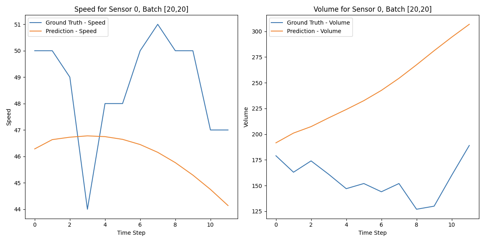
Twelve-step forecast: predicted volume rises while observed volume falls (Figure 2.5)
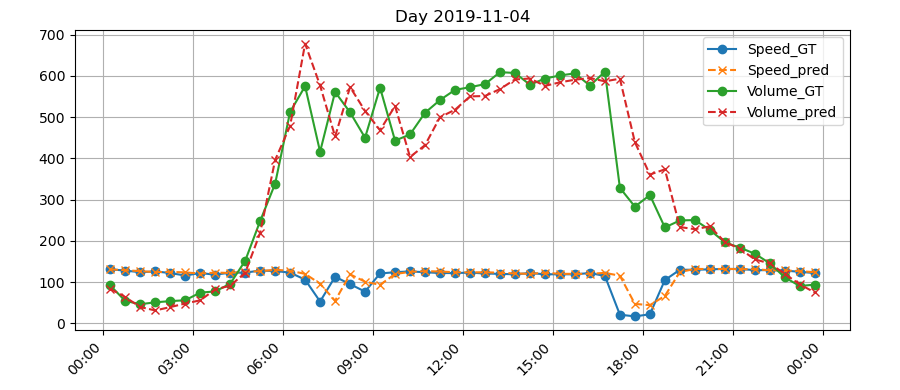
One-step forecast, 4 November 2019: the drop around 17:00 is reproduced one interval late (Figure 2.6)
| Setting | Information required at inference | Representative studies |
|---|---|---|
| Short-term forecasting | Recent traffic history at the target and neighbouring sensors | DCRNN, STGCN, STGAT, ST-MetaNet |
| Reconstruction and kriging | Traffic observations at other locations | Zhang et al. (2020), IGNNK (Wu et al. 2021) |
| Probe-based estimation | Probe speeds, with no volume counter at the target | Sekuła et al. (2018), Hein et al. (2025) |
| External-attribute estimation | Roadway, socioeconomic and land-use characteristics only | Sfyridis and Agnolucci (2020, 2023), Das and Tsapakis (2020), van Strien and Grêt-Regamey (2024) |
Rows run from the weakest to the strongest information constraint (Sections 2.3.6 and 2.3.7)
Question. Can more of the demand-to-flow relationship be learned directly from observed link counts, when prediction uses only external characteristics and network structure rather than traffic measurements or a complete observed OD matrix?
After Table 2.3 and Figure 2.7
Shared prediction task · road-network, socioeconomic and traffic data · evaluation design
| Mukara | DeepDemand | |
|---|---|---|
| Prediction unit | Directed trunk-road segment in a year, $i=(t,e)$ | Directed road edge, $i=e$ |
| Traffic period | 2015–2022 | 2017–2024 |
| Target | Mean weekday daily volume, per year | Median of annual AADT across valid years |
| Temporal exclusions | Weekends and bank holidays | Annual AADT from valid daily observations |
| Target edges | 498 | 5,088 |
| Traffic input at prediction | None | None |
After Table 3.2. Both targets are in vehicles per day.
| Source | Coverage | Mukara | DeepDemand |
|---|---|---|---|
| National Highways SRN | England | Compact interurban trunk-road network | Monitored highway system holding the targets |
| OpenStreetMap | Great Britain | Land use, road context and POIs | National driving network, land use and POIs |
| ONS population estimates | England and Wales | Annual rasterised population | LSOA demographic features |
| Business Register and Employment Survey | England and Wales | Annual rasterised employment | LSOA employment features |
| Census 2021 | England and Wales | – | Household composition, car or van availability |
| Deprivation data (2019) | England and Wales | – | Income and employment deprivation |
| Google Routes API | Mukara segments | Segment travel and geometric attributes | – |
| National Highways TRIS | England SRN | Targets on 498 directed segments | Targets on 5,088 directed edges |
After Table 3.1. Small-area statistics use the Lower Layer Super Output Area (LSOA) geography.
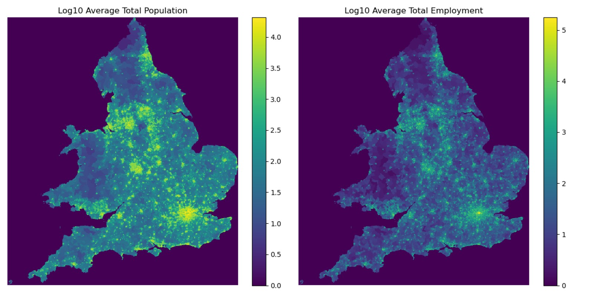
Population and employment on the 1 km grid (Figure 4.5)
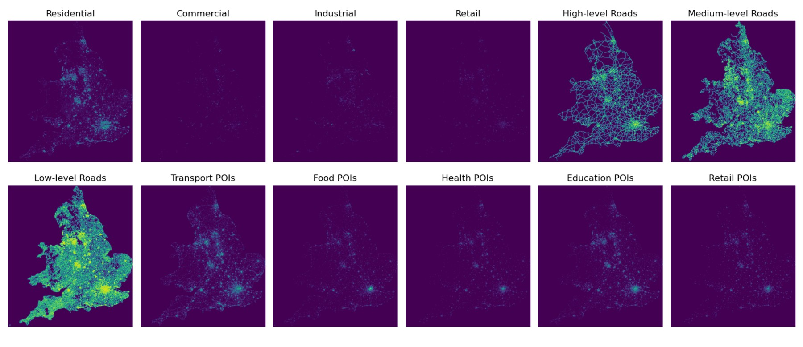
Land-use, road-network and POI channels (Figure 4.6)
Held-out target edges spread across the network. Mukara keeps every year of an edge in the same fold. DeepDemand splits target edges 70/10/20 into training, validation and test sets.
Each official region of England is held out in turn. The test region contributes no traffic counts to fitting. DeepDemand draws its validation set from the other eight regions.
GEH depends on the flow period. The usual references of 5 and 10 apply to hourly flows (Backup).
RQ1 · Can highway traffic be estimated from external socioeconomic characteristics and road-network structure without using traffic observations as prediction inputs?
First test of the prediction setting, with deliberately limited theory structure: no OD pairs, OD matrix or route assignment. The name derives from the Japanese for “from nothing”, as no sensor history is an input.
Objectives
Data
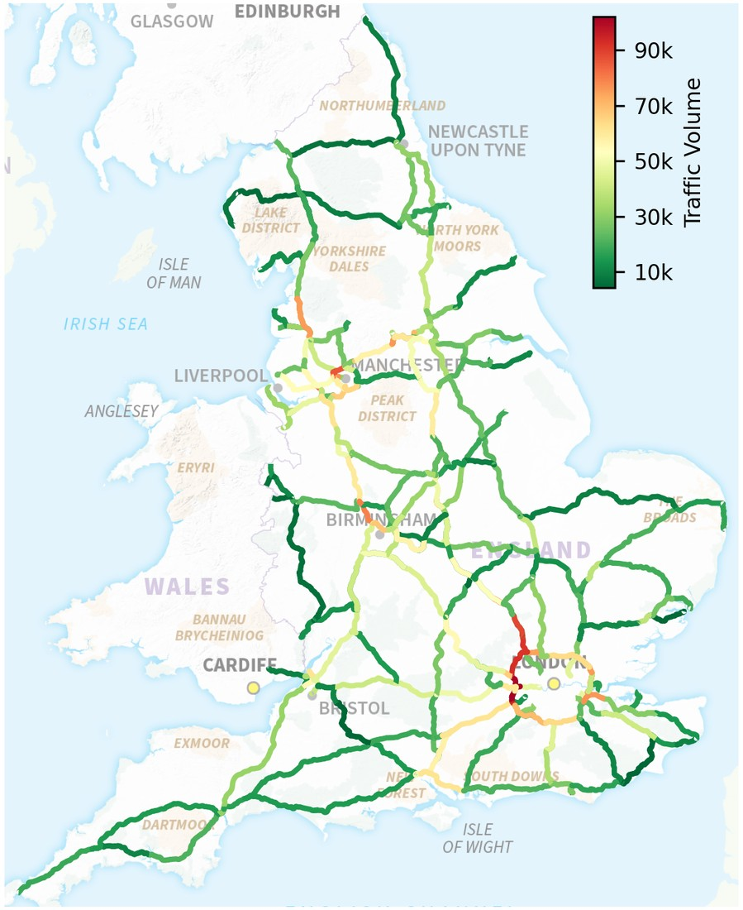
Mean weekday daily traffic, 2015–2022 (Figure 4.8)
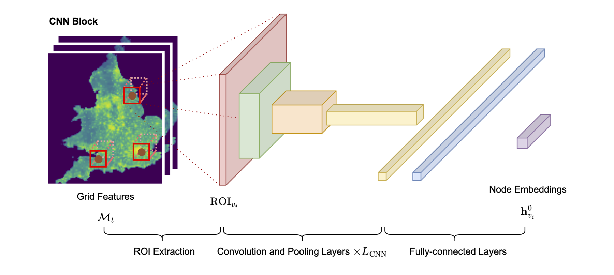
CNN block: a region of interest around each junction becomes a node embedding (Figure 4.9)
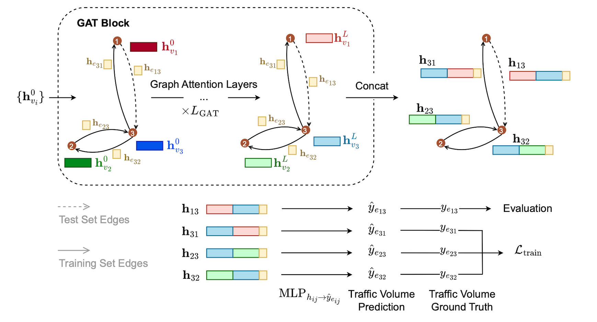
GAT block: embeddings propagate over the trunk-road graph, then an MLP predicts each edge (Figure 4.10)
Node context from the grid
Edge-aware attention, per layer and head
Edge prediction
| Model | Random CV (five folds) | Spatial CV (nine regions) | ||||
|---|---|---|---|---|---|---|
| MGEH | MAE | $R^2$ | MGEH | MAE | $R^2$ | |
| Global mean | 102.31 | 19,708 | 0 | 105.27 | 20,413 | $\lt 0$ |
| Gravity model | 84.23 | 14,836 | 0.342 | 93.18 | 16,925 | 0.201 |
| Ridge regression | 75.64 | 12,942 | 0.463 | 86.72 | 15,109 | 0.302 |
| Random forest | 71.38 | 12,319 | 0.504 | 81.54 | 14,216 | 0.361 |
| Mukara | 50.74 | 8,989 | 0.583 | 57.63 | 9,955 | 0.521 |
Means across folds (Table 4.7). MAE in vehicles per day.
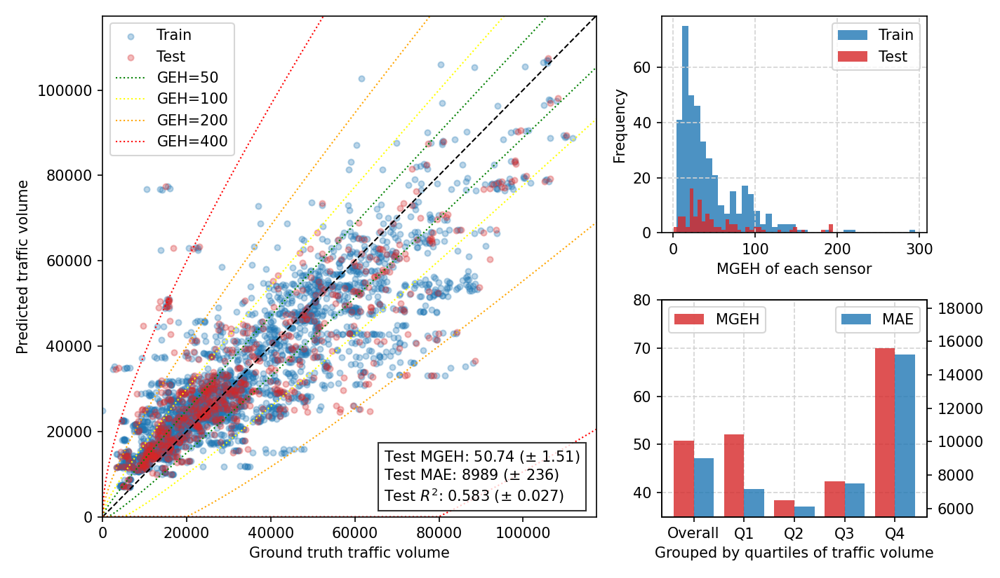
Predicted against observed volume, first CV fold (Figure 4.13)
Architecture
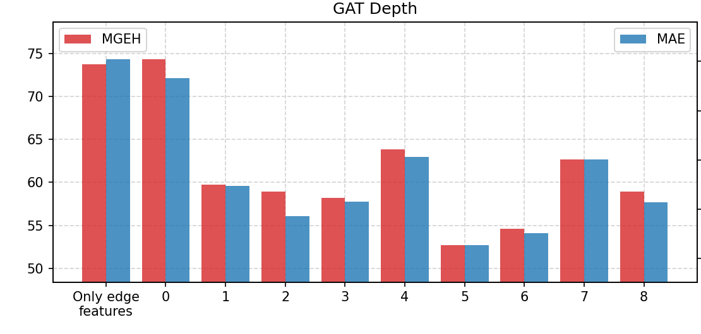
Test MGEH and MAE by GAT depth (Figure 4.12)
Feature groups
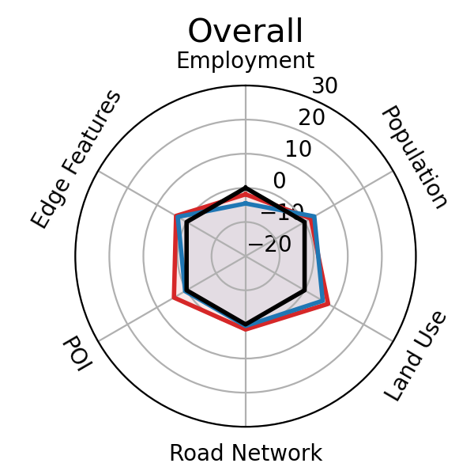
Change in MGEH (red) and MAE (blue) when one group is removed, % (Figure 4.16)
Scope of the Mukara result
Representational limits and the DeepDemand response
| Limit of Mukara | DeepDemand |
|---|---|
| Long trunk-road connections between major junctions hide variation near junctions and slip roads | Detailed national driving network with 5,088 target edges |
| Square raster windows: proximity is not accessibility, and rasterising changes the LSOA geography | LSOAs kept as units, reached through network travel time |
| Graph propagation does not identify which OD movements use the target edge | Explicit OD pairs, screened by shortest paths through the edge |
Sections 4.5.4 and 5.2
RQ2 · Can a more explicit representation of OD relationships informed by travel-demand theory support prediction and interpretation at a finer road-segment resolution?
Two methodological developments:
Trained end to end on observed link volumes. No observed OD flows are used, so the learned OD scores are model-derived quantities, not trip counts.
| Travel-demand concept | DeepDemand component |
|---|---|
| Trip generation and attraction | Separate origin and destination encoders $f_{\mathrm{O}},\ f_{\mathrm{D}}$ |
| Spatial interaction | OD interaction score $s_{od}$ from $f_{\mathrm{OD}}$ |
| Deterrence function | Learned travel-time attenuation $p_{od}$ from $f_{\mathrm{t}}$ |
| Traffic assignment | Shortest-path screening, then summation over the screened pairs $\mathcal{P}_{e^\star}$. Assignment-like, not an equilibrium. |
Framework stages (Figure 5.1)
| Alternative explored | Observation | Final choice |
|---|---|---|
| Keep only major road classes | Truncated connections at junctions and slip roads, distorted travel-time surfaces | Full drivable network |
| Raw OSM segments as targets | Targets depend on digitisation and duplicate one another | Simplified graph between junctions |
| GNN on the full national graph | Millions of nodes for few targets, deep propagation, oversmoothing | Target-specific computation |
| Local subgraphs, shortest-path-tree aggregation | Reachability does not show that travel between two areas uses the target edge | Explicit OD pairs with route screening |
| Independent origin and destination searches | The two regions overlap as the horizon grows | Competitive two-source expansion |
| Learned spatial clustering | Unstable across runs, no consistent gain | Network accessibility as spatial structure |
| Softmax attention over OD pairs | The weight of a pair depends on the other pairs of the edge | Independent attenuation per pair |
| Relaxed screening (within 1.2 × shortest time) | Many weakly related pairs, especially around slip roads | Exact shortest-path criterion |
| MLP aggregation | Unstable optimisation. A learned power $S^{a}$ converged to $a$ of about 0.41 | Fixed square root, $\sqrt{S}$ |
Section 5.3.2. The findings concern the tested designs under link-count supervision and do not rule out other GNN formulations.
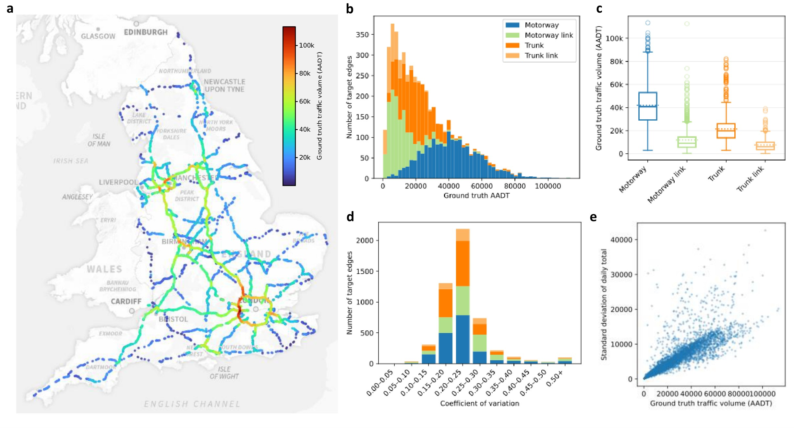
Observed AADT: map, distributions by road type and day-to-day variability (Figure 5.5)
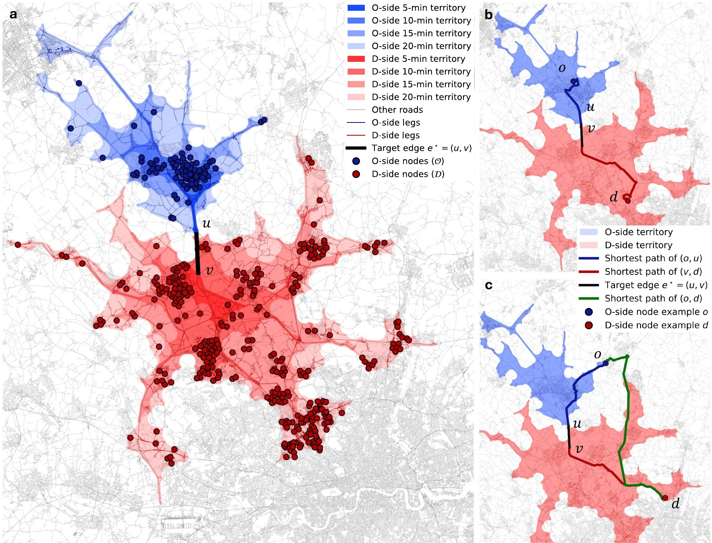
(a) Competitive expansion, shown with a 20-minute cutoff. (b) A retained pair. (c) An excluded pair (Figure 5.7)
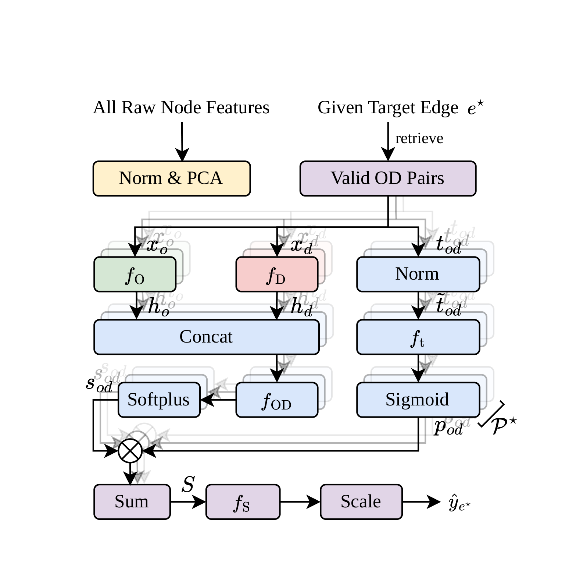
Figure 5.8
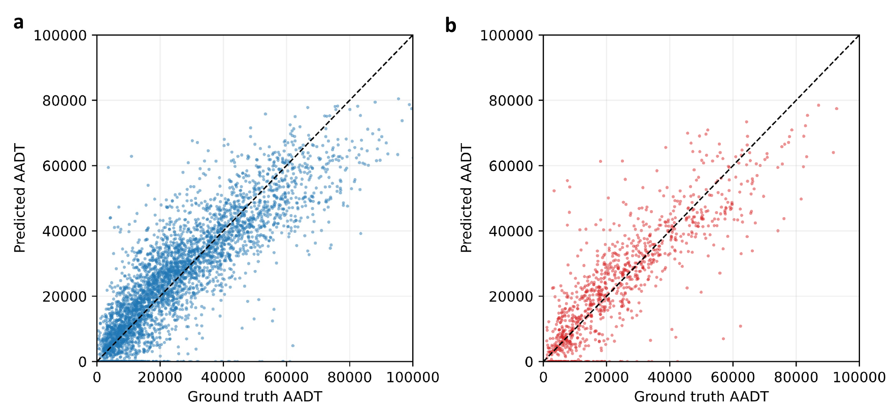
Predicted against observed AADT, training (a) and test (b) edges, first random-CV fold (Figure 5.9)
| Random CV | Spatial CV | |
|---|---|---|
| Test $R^2$ | 0.706 | 0.647 |
| MAE (veh/day) | 7,567 | 7,885 |
| wMAPE | 30.0% | 31.1% |
| MGEH | 56.08 | 58.00 |
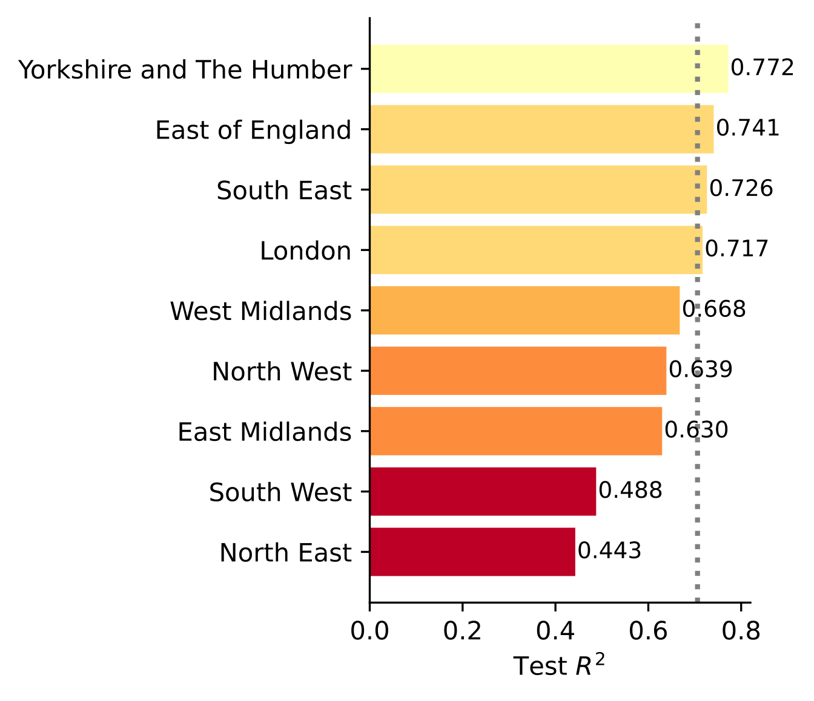
Test $R^2$ by held-out region, 0.443 to 0.772. Dotted line: random-CV mean (Figure 5.11)
| Model | Input | Random CV | Spatial CV | ||||
|---|---|---|---|---|---|---|---|
| MGEH | MAE | $R^2$ | MGEH | MAE | $R^2$ | ||
| Mean | none | 96.77 | 15,171 | −0.001 | 97.45 | 15,402 | −0.097 |
| Linear regression | OD-structured | 89.69 | 14,350 | −0.003 | 93.15 | 14,956 | −0.119 |
| Ridge regression | OD-structured | 89.38 | 14,141 | 0.062 | 93.15 | 14,876 | −0.094 |
| Gravity (log-linear) | screened pairs | 65.46 | 9,379 | 0.546 | 66.50 | 9,521 | 0.486 |
| Random forest | pooled | 90.34 | 14,195 | 0.113 | 92.03 | 14,534 | 0.008 |
| Random forest | OD-structured | 57.68 | 8,659 | 0.623 | 66.37 | 10,318 | 0.445 |
| XGBoost | pooled | 90.02 | 14,141 | 0.115 | 92.04 | 14,514 | 0.003 |
| XGBoost | OD-structured | 53.23 | 7,975 | 0.656 | 63.16 | 9,776 | 0.458 |
| LightGBM | pooled | 89.57 | 14,042 | 0.130 | 91.91 | 14,493 | 0.005 |
| LightGBM | OD-structured | 51.14 | 7,652 | 0.678 | 61.26 | 9,487 | 0.481 |
| GAT | local graph | 72.39 | 11,102 | 0.402 | 74.35 | 11,552 | 0.319 |
| DeepDemand | screened pairs | 56.08 | 7,567 | 0.706 | 58.00 | 7,885 | 0.647 |
Means across folds on identical partitions (Table 5.4). Pooled: one catchment average, without origin–destination separation or screening.
| Variant (one component replaced) | Random CV | Spatial CV | ||
|---|---|---|---|---|
| MGEH | $R^2$ (change) | MGEH | $R^2$ (change) | |
| DeepDemand, full model | 56.08 | 0.706 | 58.00 | 0.647 |
| No OD pair screening | 57.86 | 0.670 (−0.036) | 60.74 | 0.596 (−0.051) |
| No competitive partition and no screening | 60.52 | 0.639 (−0.067) | 63.55 | 0.548 (−0.099) |
| Shared origin and destination encoder | 56.13 | 0.709 (+0.003) | 57.75 | 0.645 (−0.002) |
| Constant travel-time attenuation | 60.62 | 0.659 (−0.047) | 66.46 | 0.503 (−0.144) |
| Linear aggregation instead of $\sqrt{S}$ | 69.50 | 0.624 (−0.081) | 76.03 | 0.445 (−0.202) |
Table 5.6. Each variant is retrained under the same protocol.
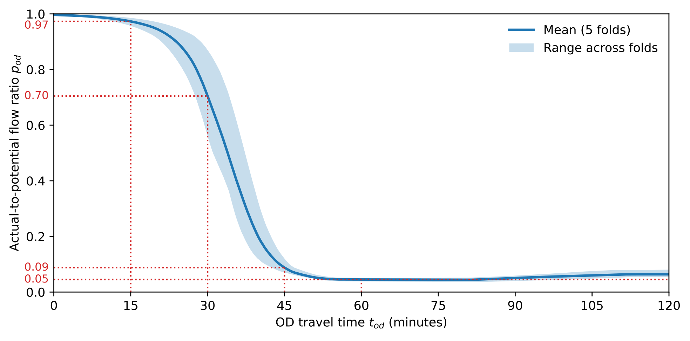
Attenuation $p_{od}$ against OD travel time: mean over random-CV folds and range across folds (Figure 5.13)
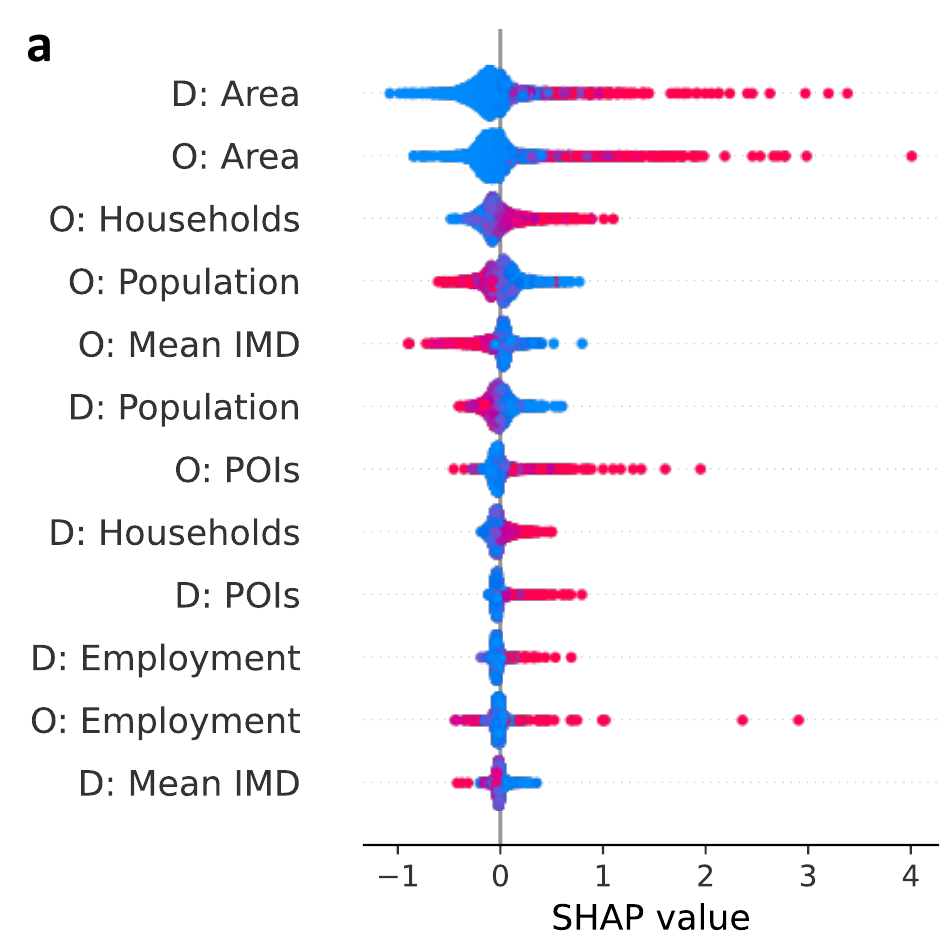
(a) Feature domains at origin (O) and destination (D). Red: high feature value (Figure 5.15)
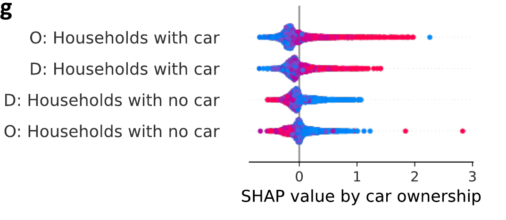
(g) Household car availability
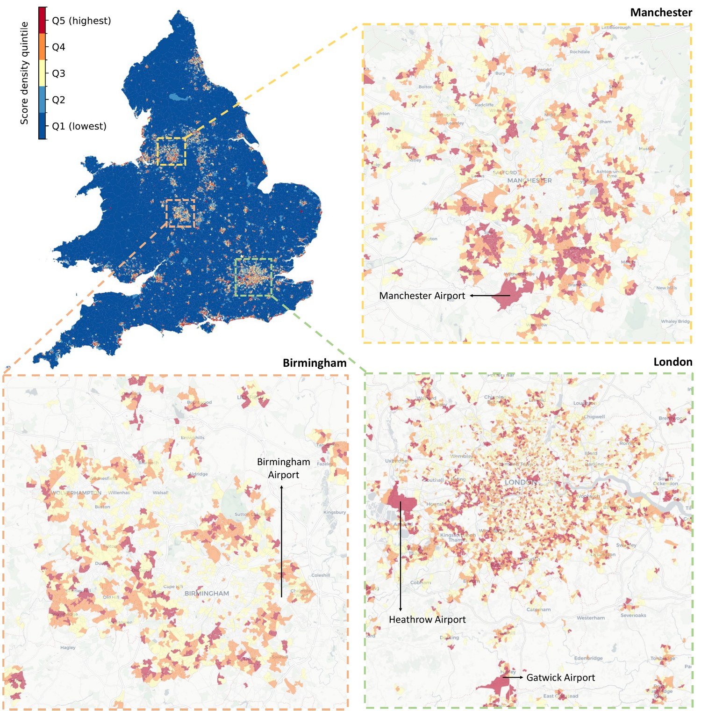
Destination potential by quintile, with Manchester, Birmingham and London (Figure 5.21)
A conditional response of the fitted model, not a validated forecast. Employment, land use, policy, mode shift, congestion and capacity are not represented.
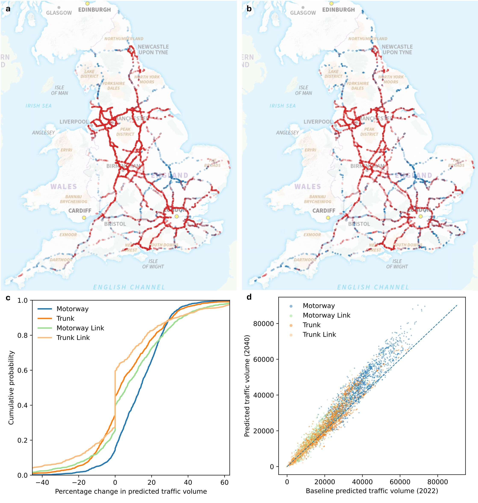
(a, b) Absolute and percentage change from 2022. (c) Change by road class. (d) Segment comparison (Figure 5.23)
| Analysis | Variant | Random CV $R^2$ | Spatial CV $R^2$ |
|---|---|---|---|
| Multi-year target | Median across years (main) | 0.706 | 0.647 |
| Mean across years | 0.709 | 0.645 | |
| Median excluding pandemic years | 0.709 | 0.651 | |
| Input vintage | All inputs dated before 2017 | 0.713 | 0.648 |
| OD catchment radius | 30 min (0.17 billion pairs) | 0.649 | 0.570 |
| 60 min (1.64 billion pairs, main) | 0.706 | 0.647 | |
| 90 min (4.90 billion pairs) | 0.702 | 0.646 |
Tables 5.7 to 5.9. Each variant is retrained under the full protocol.
Not represented. Car availability and accessibility carry some modal information, but modal shares and competing services are not modelled.
Extraction and screening ignore time of day, recurrent congestion and incidents. This suits a long-term AADT target but not time-varying route choice.
Screened contributions are summed. There is no equilibrium, capacity or congestion response, and equally short alternative routes are not split.
No short-term variability and no predictive uncertainty. Temporal forecasting needs its own validation design.
SHAP describes associations between raw LSOA variables and fitted OD scores, not the model's internal use of principal components.
The NTS covers personal travel only, and mean HGV length of haul is about 105 km. Cars are about 74% of vehicle miles and HGVs about 6%, so the catchment is supported for cars but not for freight.
Findings · contributions · planning relevance · further work
| Mukara | DeepDemand | |
|---|---|---|
| Prediction unit | 498 directed trunk-road segments between major junctions | 5,088 monitored edges on the detailed driving network |
| Traffic target | Annual mean weekday daily traffic, 2015–2022 | Median AADT across valid years, 2017–2024 |
| External representation | Rasterised population, employment, land use, road context and POIs | LSOA demographic, socioeconomic, land-use and POI characteristics |
| Network representation | Compact trunk-road graph with graph-attention propagation | Great Britain driving network with target-specific OD extraction and screening |
| Demand representation | Mostly implicit in learned embeddings | Explicit screened OD pairs with learned scores and attenuation |
| Test $R^2$, random / spatial | 0.583 / 0.521 | 0.706 / 0.647 |
| Structural finding | Spatial context and network propagation both contribute | Partitioning, screening, attenuation and sublinear aggregation support prediction and transfer |
| Inspectable quantities | Feature-group and architectural contributions | Travel-time attenuation, OD scores, origin and destination potentials |
After Table 6.1. The $R^2$ values are not directly comparable: units, targets, periods and protocols differ.
Two models learn link-level traffic from observed counts, with only external socioeconomic and network information at prediction: no traffic-state input and no observed OD matrix. The claim is this conjunction at national scale, not the first use of external variables.
Region-held-out CV alongside random CV in both studies. It separates models that transfer from models that only fit, and it bounds the claims: it is not future-year forecasting, transfer to another country or intervention analysis.
Competitive two-source Dijkstra, shortest-path screening, learned interaction and travel-time attenuation. Routing on 6.3 million nodes becomes a reusable preprocessing step, and the representation is separable from the neural architecture.
Observed link counts can supervise models that learn demand-to-flow relationships from external characteristics and network structure. How that relationship is represented matters for accuracy, transfer and interpretation, beyond model capacity alone.
Supports
Does not establish
Traffic observations still matter. Performance depends on the representativeness and quality of the training counts, and a new setting needs validation and a check that it lies within the training domain.
Section 6.4
Questions and discussion
Yue Li · Department of Architecture, University of Cambridge
Distribution
Maximising $\log W$ with $W=T!/\prod_{ij}T_{ij}!$, subject to the margins and the total cost $C=\sum_{ij}T_{ij}c_{ij}$, gives $f(c_{ij})=\exp(-\beta c_{ij})$ (Wilson).
Mode choice
Assignment
Section 2.2
Relation to $R^2$. With small relative errors and a volume-weighted RMS GEH $G$,
For this network $\bar{y}=25{,}243$ and $\sigma_y=18{,}893$, so $G=16$ corresponds to $R^2\approx0.982$ and $G=32$ to $R^2\approx0.928$.
RMS GEH is not MGEH, so there is no general conversion from the reported MGEH to $R^2$ (Appendix A.3).
| Variable | Metric | Training | Validation |
|---|---|---|---|
| Speed | MAE (km/h) | 1.527 | 2.538 |
| Speed | RMSE (km/h) | 3.308 | 5.237 |
| Volume | MAE (veh/15 min) | 25.74 | 68.85 |
| Volume | RMSE (veh/15 min) | 41.65 | 126.28 |
Table 2.2. Appendix B gives the architecture and training details.
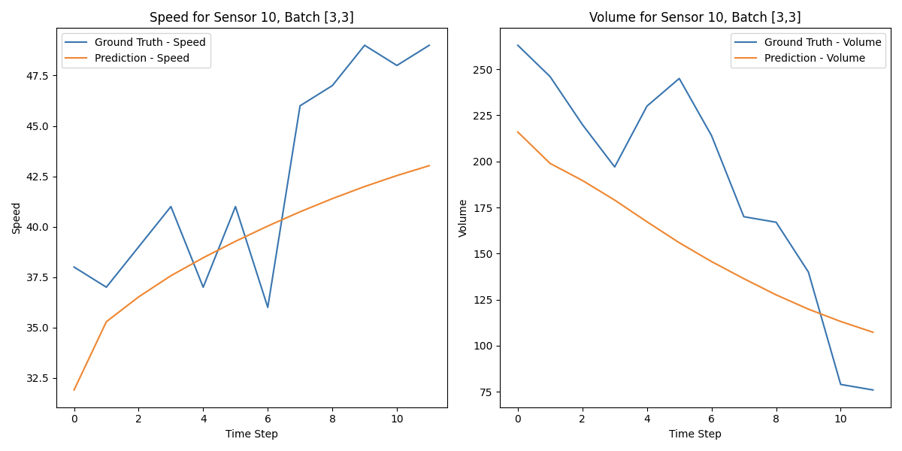
Blind extrapolation: smooth continuation of the recent trend (Figure 2.5)
Follow-up: 30-minute averages and a twelve-to-one structure (six hours of history, next half hour), shown for 4 to 10 November 2019.
| Step | Remaining | Excluded |
|---|---|---|
| Candidate sensors mapped to the 498 segments | 3,984 | – |
| Topology filter: slip roads, ramps, junction influence zones | 2,815 | 1,169 |
| One sensor per segment, availability first | 498 | 2,317 |
| Fallback: opposite-direction proxy | 3 segments | – |
Table 4.2
| Characteristic | Included (498) | Discarded (3,486) |
|---|---|---|
| Motorway share | 60.2% | 57.1% |
| Mainline position | 100% | 66.8% |
| London share | 6.4% | 14.9% |
| Mean volume (SD), veh/day | 33,735 (21,999) | 30,151 (27,358) |
| Temporal coverage (SD) | 0.86 (0.10) | 0.31 (0.24) |
Table 4.3
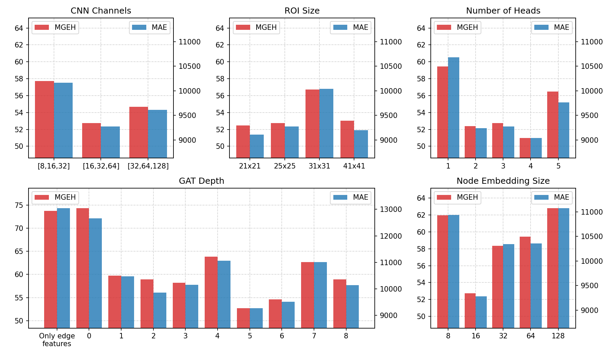
Test MGEH and MAE by configuration (Figure 4.12)
| Check | Variant | MGEH | MAE | $R^2$ |
|---|---|---|---|---|
| Main model | 2023 OSM, weekdays, MGEH loss | 57.63 | 9,955 | 0.521 |
| OSM vintage | 1 January 2019 snapshot | 58.14 | 10,021 | 0.517 |
| Target days | All days, including weekends and holidays | 56.48 | 9,734 | 0.533 |
| Training loss | MSE | 58.12 | 9,901 | 0.523 |
| MAE | 58.64 | 9,843 | 0.519 | |
| Huber | 57.91 | 9,886 | 0.522 |
Tables 4.8 to 4.10
MGEH training favours the lowest-volume quartile (MGEH 51.5 against 55.9 with MSE). MSE training favours the highest (67.2 against 69.8). The loss redistributes error rather than changing predictive capacity (Table 4.11).
| Region | Observed | Predicted | Error |
|---|---|---|---|
| North East | 0.728 | 0.756 | +3.8% |
| North West | 2.342 | 2.296 | −2.0% |
| Yorkshire and The Humber | 2.063 | 2.128 | +3.2% |
| East Midlands | 2.781 | 2.719 | −2.2% |
| West Midlands | 2.654 | 2.732 | +2.9% |
| East of England | 1.742 | 1.703 | −2.2% |
| London | 1.964 | 1.856 | −5.5% |
| South East | 1.897 | 1.842 | −2.9% |
| South West | 0.629 | 0.667 | +6.0% |
| National | 16.800 | 16.699 | −0.6% |
Sums of segment volumes in held-out regions, million vehicles per day (Table 4.13). Not unique trips, and errors can cancel.
| Feature group | Stratification | Features | TDM relevance | Source |
|---|---|---|---|---|
| Area and population density | Land area, population density | 2 | Generation, distribution | ONS |
| Population | Total, sex (2), age groups (5), sex–age (10) | 18 | Generation | ONS |
| Employment | Total, work type (2), sector (18), work type–sector (36) | 57 | Attraction | ONS (BRES) |
| Households and cars | Total, car or van availability (2), composition (10), combinations (20) | 33 | Generation, mode choice | Census 2021 |
| Deprivation | Income and employment domain scores, 2019 | 2 | Generation, distribution | Deprivation data |
| Land-use area | Residential, commercial, industrial, retail | 4 | Generation, attraction, distribution | OSM |
| POIs | Transport, food, health, education, retail | 5 | Attraction, distribution | OSM |
Table 5.1. 121 variables harmonised to 2021 LSOAs (2011-based sources converted with the ONS exact-fit lookup), standardised and reduced to 64 principal components.
| Aspect | Mukara | DeepDemand |
|---|---|---|
| Targets | 498 manually built segments | 5,088 automatically matched edges |
| Years | 2015–2022 | 2017–2024 |
| Target | Annual weekday volume | Median AADT across years |
| Features | 1 km rasters | 121 LSOA variables, 64 components |
| Random CV | Five folds, four fitted and one tested | 70/10/20 within five folds |
| Spatial CV | Nine regions | Nine regions |
Table 5.3. Mukara is an external reference, not a controlled baseline.
| Model | Random CV $R^2$ | Spatial CV $R^2$ | ||
|---|---|---|---|---|
| Training | Test | Training | Test | |
| Gravity (log-linear) | 0.546 | 0.546 | 0.546 | 0.486 |
| Random forest (OD-structured) | 0.931 | 0.623 | 0.934 | 0.445 |
| XGBoost (OD-structured) | 0.976 | 0.656 | 0.977 | 0.458 |
| LightGBM (OD-structured) | 0.973 | 0.678 | 0.973 | 0.481 |
| GAT | 0.567 | 0.402 | 0.592 | 0.319 |
| DeepDemand | 0.729 | 0.706 | 0.729 | 0.647 |
Tables 5.4 and 5.5, means across folds
The tree ensembles fit the training edges almost exactly but transfer worst. The train–test gap of DeepDemand is small under both schemes.
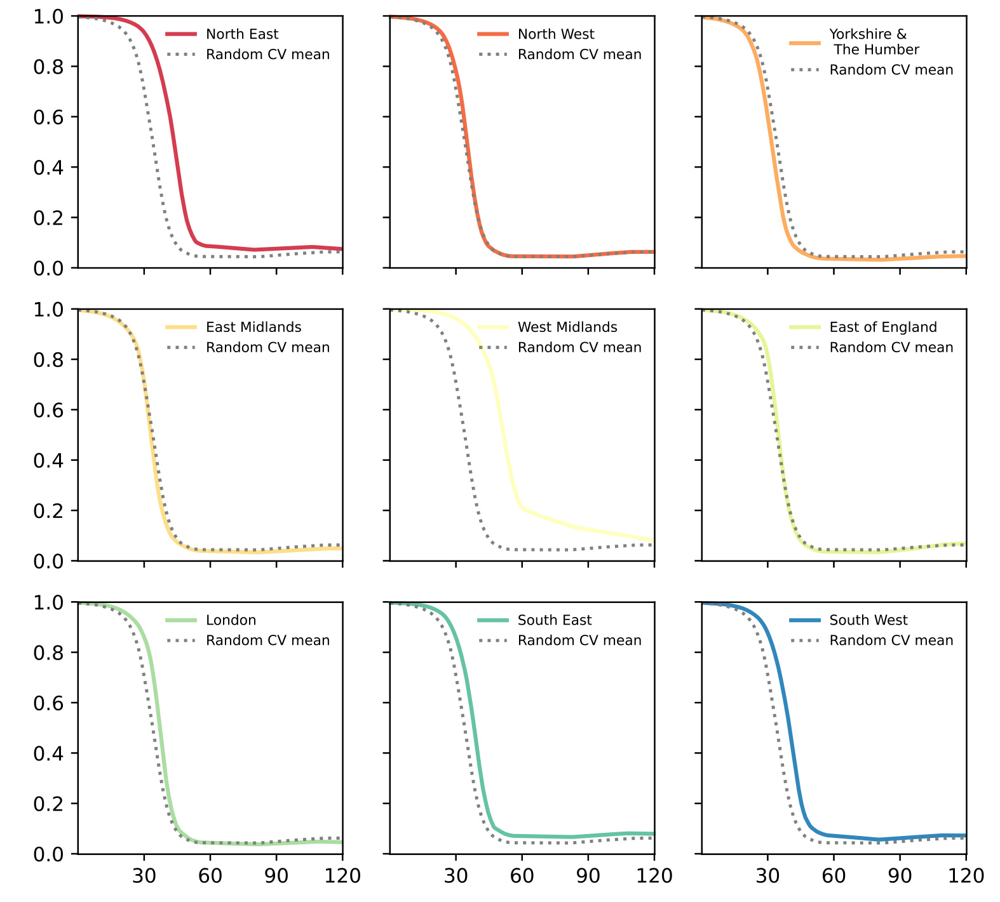
Spatial-CV attenuation curves against the random-CV mean (Figure 5.13)
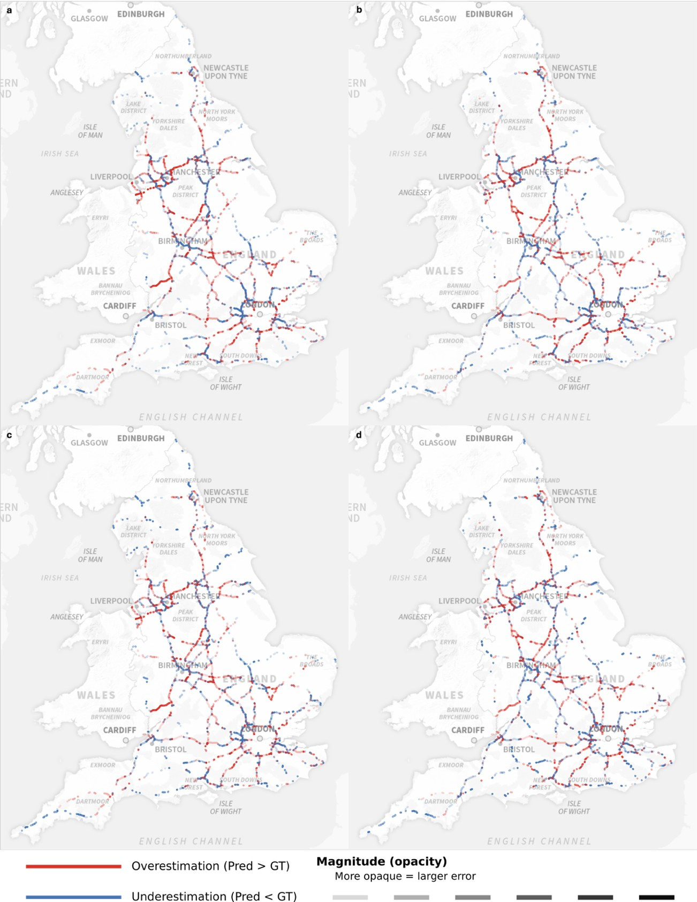
MAE and MGEH by direction. Red: overestimation. Blue: underestimation (Figure 5.12)
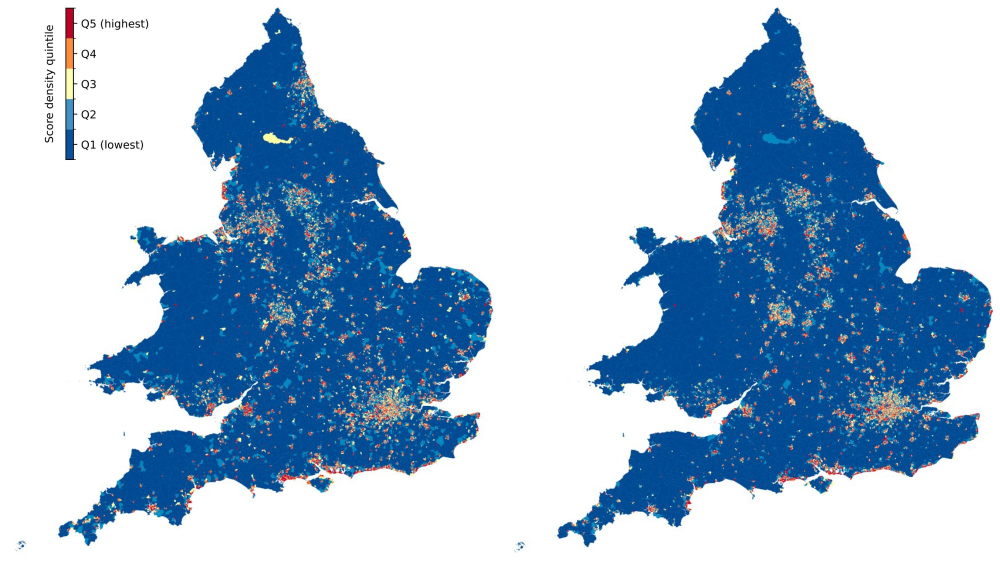
Origin potential (left) and destination potential (right), quintiles after standardisation by LSOA area (Figure 5.22)